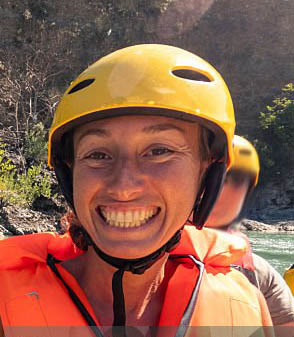

The company exists with a clear purpose: to deliver value through innovation, quality, and meaningful service to its customers and community. Its mission is to consistently provide reliable products and solutions that improve everyday experiences while maintaining high standards of integrity and excellence. Guided by a strong creed, the company believes in honesty, customer satisfaction, teamwork, and continuous growth. Its motto, “Excellence in every step,” reflects a commitment to doing things right, building trust, and striving for lasting impact.